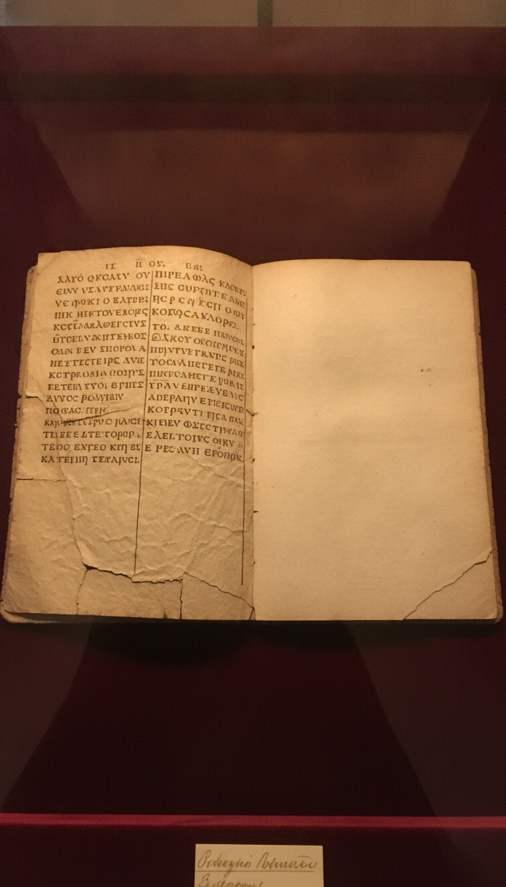

The Gospel of Mark, in the two oldest complete Bibles on Earth, ends with three words. They were afraid. Everything after that was added later.
Almost nobody knows this. The receipts have been sitting in the Vatican Library and the British Library for over a century.

Two Fourth-Century Bibles. Same Ending. Verse 8.
Codex Vaticanus, catalogued as Vat. gr. 1209, has lived in the Vatican Apostolic Library since at least 1475. Scholars date its production to roughly 325 to 350 AD. It ends the Gospel of Mark at chapter 16, verse 8.
Codex Sinaiticus, discovered by Constantin von Tischendorf at Saint Catherine's Monastery on Mount Sinai in 1844 and now housed primarily at the British Library in London under shelfmark Add MS 43725, dates to the same century. It also ends Mark at 16:8.
These are not fragments. These are the two most complete Greek Bibles surviving from the fourth century. Both stop at the same word. Ephobounto. They were afraid.
The Blank Column Nobody Wants to Explain
In Codex Vaticanus, after the final word of Mark 16:8, the scribe left the rest of that column blank and skipped a full column before starting the Gospel of Luke. This is the only such gap in the New Testament section of the entire codex.
Parchment in the fourth century was expensive. Calfskin or sheepskin, scraped and treated by hand. A scribe working through a 1,400-page Bible did not leave a column blank by accident.
Textual critic Philip Payne documented this anomaly in a 1995 article in New Testament Studies, noting that the blank space is roughly the exact length required to accommodate verses 9 through 20. The scribe knew the longer ending existed. The scribe chose not to copy it. Then the scribe marked the absence.
Eusebius and Jerome Said It Out Loud
Eusebius of Caesarea, the bishop who attended the Council of Nicaea in 325 AD, wrote a treatise called Quaestiones ad Marinum. In it, he stated that the accurate copies of Mark ended at verse 8 and that the longer ending was absent from almost all manuscripts available to him.
Jerome, writing roughly seventy years later from his cell in Bethlehem around 400 AD, confirmed it in his Epistle 120 to Hedibia. He said the longer passage was found in scarcely any Greek copies.
Two of the most respected scholars of the early Church, both with access to libraries we no longer have, both said the same thing. The ending was missing from the good copies.
The snake-handling verse, the great commission, and the line that damns the unbeliever all come from twelve verses a fourth-century scribe refused to copy.
Thirty Words That Do Not Belong
The vocabulary inside Mark 16:9 through 20 does not match the Greek of the previous fifteen chapters. Scholar Bruce Metzger, in his Textual Commentary on the Greek New Testament published by the United Bible Societies in 1971, identified roughly thirty words and phrases in the longer ending that appear nowhere else in Mark.
The Greek for the verb to appear, phaneroo, shows up three times in the disputed passage and zero times in the rest of Mark. The participial construction used to introduce Mary Magdalene in verse 9 reintroduces a character who was already named in verse 1 of the same chapter, as if the writer forgot.
Mark's signature word, euthys, meaning immediately, which appears 41 times in chapters 1 through 15, vanishes completely in verses 9 through 20.
What the Added Verses Smuggle In
Mark 16:15 contains the Great Commission, the order to preach the gospel to every creature. The parallel in Matthew 28 has dominated missionary theology for sixteen centuries. The Markan version did not exist in the oldest manuscripts.
Mark 16:16 contains the line, he that believeth not shall be damned. This single sentence has been cited in Calvinist arguments for predestined damnation, in Catholic baptismal theology, and in countless revival sermons. It is not in Sinaiticus. It is not in Vaticanus.
Mark 16:18 describes believers taking up serpents and drinking deadly poison without harm. This verse became the scriptural foundation for the Appalachian snake-handling churches founded by George Hensley in Tennessee around 1910. Hensley died of a snakebite in 1955. The verse that killed him was added to the Bible by an unknown hand.
Modern Translations Already Admitted It
Open a New Revised Standard Version. Mark 16:9 through 20 sits inside double brackets with a footnote stating the most ancient authorities lack these verses. Open the English Standard Version. Same brackets. Open the New International Version. A horizontal line and a note reading, the earliest manuscripts and some other ancient witnesses do not have verses 9 through 20.
The publishers know. The translation committees know. The seminaries know. The footnote is right there on the page.
The question is not whether the verses were added. The publishing houses already concede that point in print. The question is who, in the centuries after Nicaea, decided the addition would stay in the canon and become the foundation for snake handlers, damnation preachers, and the Great Commission itself.
A scribe in the fourth century left a blank column in the most prestigious Bible in the Vatican. He knew something was coming. He refused to write it. Then the Church wrote it anyway.
If the snake-handling verse and the damnation line entered the canon through a forged ending, what else came in through the same door. The two oldest Bibles on Earth are still missing those twelve verses. Nobody can explain who put them back.
Before you go
7 books the Vatican doesn't want you reading. Free PDF — the texts they cut, with sources. Joined by 140+ Inner Circle members.
No spam. Unsubscribe anytime.
Go deeper
The Hidden Canon, Vol. I — Enoch. Jubilees. Thomas. Mary. Judas. 90 pages, 14 chapters, every receipt cited. The books your Bible quietly removed.
Read the Canon →Books that informed this investigation
As an Amazon Associate, Hidden Epoch earns from qualifying purchases. Cost to you: nothing.
Research safely
The VPN we use to research without being tracked. First 3 months free.
Get NordVPN →